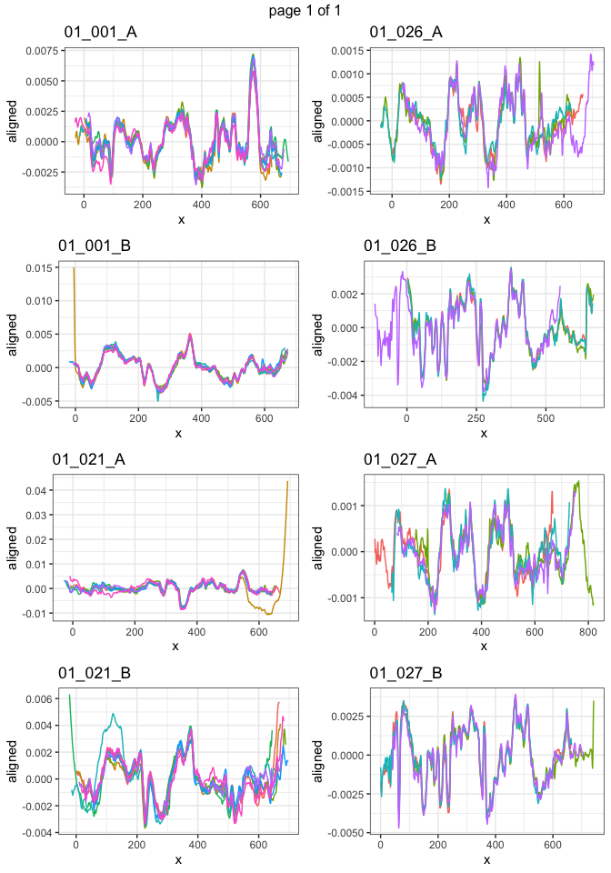

The goal of markers is to …
Installation
You can install the development version of markers like so:
remotes::install_github("heike/markers")Example
This is a basic example which shows you how to solve a common problem:
- Load toolmarks
load("data/toolmarks.RData")- Align by set
library(tidyverse)
#> ── Attaching packages ─────────────────────────────────────── tidyverse 1.3.2 ──
#> ✔ ggplot2 3.3.6 ✔ purrr 0.3.4
#> ✔ tibble 3.1.8 ✔ dplyr 1.0.10
#> ✔ tidyr 1.2.1 ✔ stringr 1.4.1
#> ✔ readr 2.1.3 ✔ forcats 0.5.1
#> ── Conflicts ────────────────────────────────────────── tidyverse_conflicts() ──
#> ✖ dplyr::filter() masks stats::filter()
#> ✖ dplyr::lag() masks stats::lag()
reps <- toolmarks %>% group_by(tool, plate, side, angle, direction, size) %>%
tidyr::nest()
reps <- reps %>% mutate(
aligned_set = data %>% purrr::map(sig_align_set, value=signature, group = mark, min.overlap = 500)
)- Visualize
reps <- reps %>%
unite("id", tool, plate, side, remove = FALSE) %>%
mutate(
plot = purrr::map2(aligned_set, id, .f = function(d, id) {
gg <- d %>% ggplot(aes(x =x, y = aligned, colour = factor(mark))) + geom_line() +
theme_bw() +
ggtitle(id[1]) +
theme(legend.position="none")
gg
})
)
library(gridExtra)
#>
#> Attaching package: 'gridExtra'
#> The following object is masked from 'package:dplyr':
#>
#> combine
do.call(marrangeGrob, list(reps$plot[1:8], nrow=4, ncol=2))
ml = do.call(marrangeGrob, list(reps$plot, nrow=4, ncol=2))
ggsave(plot=ml, filename="figures/multipage.pdf")
#> Saving 7 x 10 in imageDownload pdf with multiple pages of figures.
The steps so far are:
- Convert stl files to x3p files and save in an appropriate folder
stls <- dir(pattern="stl", path="data/stl_files", full.names = TRUE)
for (file in stls) {
stl_tool <- rgl::readSTL(file, plot=FALSE)
x3p <- stl_to_x3p(stl_tool)
x3p %>% x3p_write(file = gsub(".stl", ".x3p", file)) # not that this will re-name EVERY x3p by stl, i.e. no need to deal with stl_files to x3p_files separately
}- Function
assert_name_pattern(files, pattern)checks all file names in vectorfilesfor compliance with the pattern given inpattern.
signature extraction – I’m just filtering the signal from a set value of x to another. I bet this makes it so we lose some of the signal, but it’s simple. adding metadata –– So far I haven’t run this code, so the x3p files don’t have the correct metadata. Nina made a spreadsheet with this information, so all it would take is to run it, but it’s slow.
aligning signatures –– I’m still doing this my initial way instead of using your “markers” way because I added a piece in which all marks are the same length, 900 points, with NA fillers on either side. I figured this would make modeling easier. One thing I haven’t done is to align the signals based on two criteria: the subset by tool (marks at different angles) and then by angle. When I tried aligning the marks made at different angles the alignment didn’t look good.
binning –– So far I’ve done this by choosing an arbitrary number of bins (18, so that each bin has 50 points in it). It would be nice if I could just change that number easily, e.g. b=22, and then the code would just run. The way it’s written now it’s way too dependent on the 18 bins.
modeling –– The main task here has been calculating means by tool, and then the variance across tools. I couldn’t figure out how to do this in general so you’ll see it’s quite specific.
One more point: - concatenating sides –– I’d like to start doing the whole analysis by using the signals from sides A and B of each tool concatenated. I think that is a more honest description of what the data are. That would have to be done after aligning, I think.